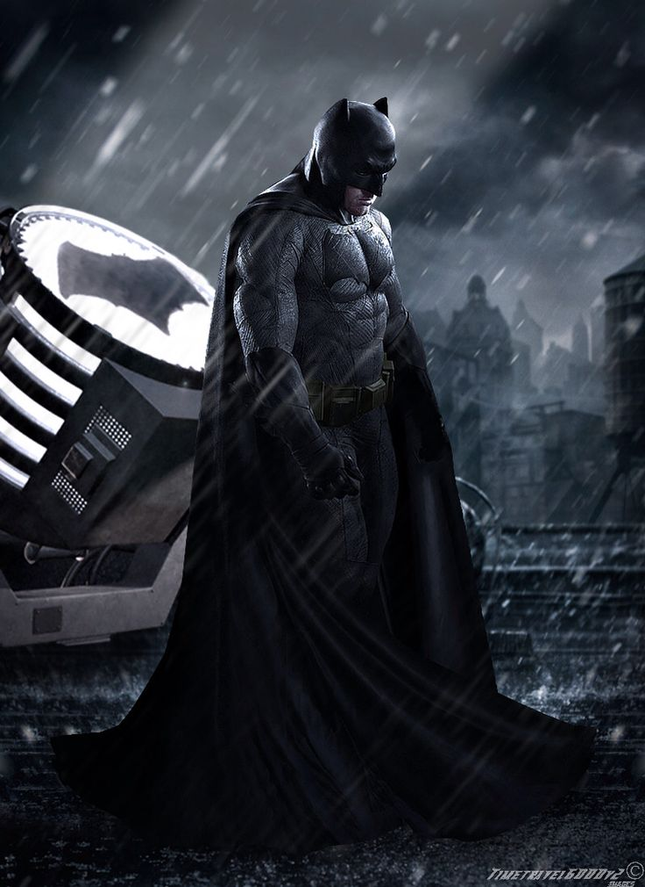

BATMAN / BRUCE WAYNE
Batman, também conhecido pelas alcunhas Homem-Morcego, Cavaleiro das Trevas, Cruzado Encapuzado e Maior Detetive do Mundo é uma personagem fictícia e super-herói da editora norte-americana DC Comics, criado pelo escritor Bill Finger a partir dos esboços do desenhista Bob Kane, aparecendo pela primeira vez na revista Detective Comics #27 (maio de 1939) com o nome "Bat-Man". A identidade secreta do Batman é Bruce Wayne, um bilionário americano, playboy, magnata de negócios, filantropo e dono da corporação Wayne Enterprises. Depois de testemunhar o assassinato dos seus pais enquanto criança, Wayne jurou vingança com um ideal de justiça contra os criminosos. Wayne, então, treina física e intelectualmente e cria uma persona inspirada no morcego para combater o crime. Batman opera na cidade fictícia Gotham, sendo ajudado por seu mordomo Alfred Pennyworth, o comissário de polícia Jim Gordon e diversos aliados vigilantes, sendo Robin seu parceiro mais recorrente. Ao contrário da maioria dos super-heróis, Batman não tem superpoderes; assim, na sua guerra contra o crime, utiliza seu intelecto de gênio, sua perícia em artes marciais e sua destreza física — bem como sua riqueza, que lhe garante um arsenal de última geração. Uma grande variedade de vilões compõe a galeria de inimigos do Batman, incluindo o Coringa, seu nêmesis.